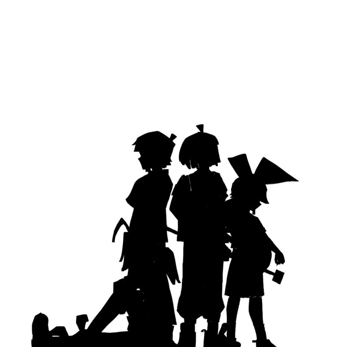
UNBEATABLE
(2025 Video Game), D-CELL GAMES
Unbeatable is... Unbeatable is that restaurant you know that's kind of grimy and definitely falling apart, but the people there are so nice and the food is the best you've ever had. Unbeatable is the friend who's kind of a mess, who never seems to sleep (or even leave their room), but is nevertheless exceedingly wonderful and creative
That's kind of flowery, I know, but that's the best way I can describe this video game. It may not look it at first glance, but having finished it, that's the only thing I can really say. A flawed piece of excellent art whose best quality is it's undeniable humanity. Did I understand what was going on towards the end? Only a little. Did I feel? Did I love the experience? Absolutely. The kind of thing you play that makes you want to carve out your own place in the world, to make something undeniably YOU.
December 26th, 2025
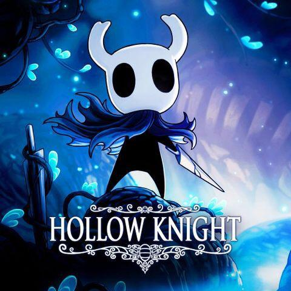
Hollow Knight
(2017 Video Game), Team Cherry
&
999: Nine Persons, Nine Hours, Nine Doors
(2009 Video Game), Chunsoft
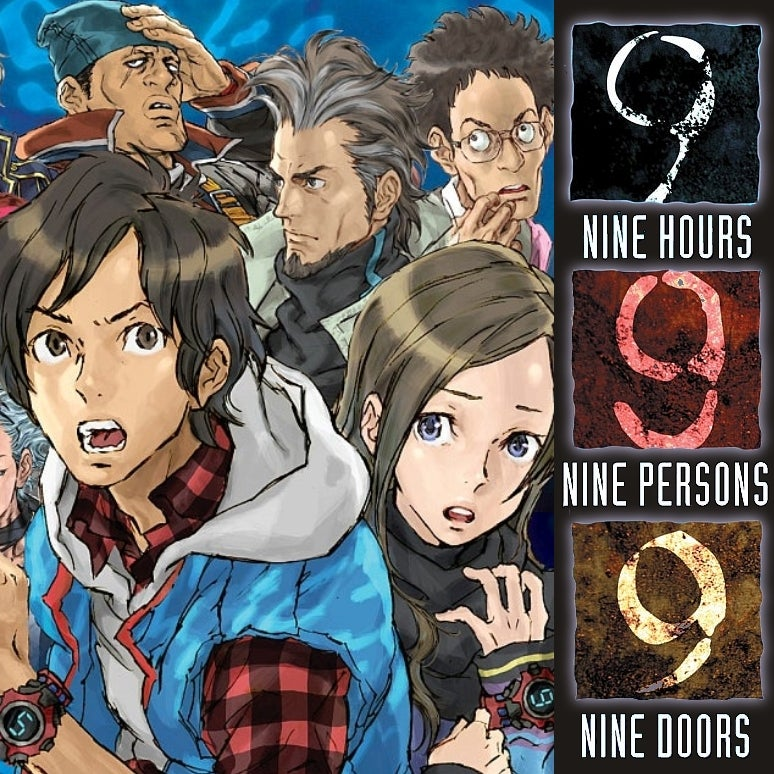
OK, now it's really been a long time since the last update. A full two months! Gonna add a couple updates at once, starting with some games I 'beat'.
I finally beat Hollow Knight! I wasn't working on it for a long time or anything, I'd just gotten around to it. Figured it was a classic I had to get under my belt eventually. And... It was pretty good! Objectively extremely well made, though it didn't really gel with me 100%. I had trouble remembering where all the different spots were for things I could do with new upgrades, and with remembering where I had or hadn't searched. Also didn't really care for how long the backtracking took, especially when I wasn't sure what I was looking for. Those are admittedly skill issues on my part though, and those aside I did have a lot of fun with the game. The badge system is very fun to play with. I got what I assume is the most common ending, and haven't yet returned to get more.
On the subject of games where I only got one ending: 999! As a fan of Ace Attorney, I've been kind of morbidly curious about other, similar games like 999 (and the likes of Danganronpa), so I tried this one out on DS while on a trip. My opinions are.. mixed? As I mentioned, I didn't stick around to get the 'true' ending, so I probably didn't get a proper experience with it, but after reading about it on the wiki, I feel like I probably wouldn'tve enjoyed that process. If, after I'd gotten the first ending, I had been shown a branching timeline of all of my choices and could hop to any point to make new ones, I feel like I would've liked it a lot more (I think other games in the series might do this?). As it stands, I didn't really want to replay it without knowing what I was looking for.
As far as the moment-to-moment gameplay goes, I mostly enjoyed it. I definitely got stuck on a couple escape sequences, but that was mainly due to not seeing elements in the world that I could interact with (being on the DS probably didn't help). The dilalouge was good in most parts and really bad in others (Are the Danganronpa games also this excessively mysoginistic?), varying in quality so much that I wondered if I had downloaded some kind of fan translation. All in all a fine experience, I might try out one of the sequels later.
One more note, I also discovered that I really like the concept/sort of genre of the death game. Put some capital C Characters into some capital S Situations and you'll have my Attention. I'll see if there is any good anime to fufil this nieche...
December 09th, 2025
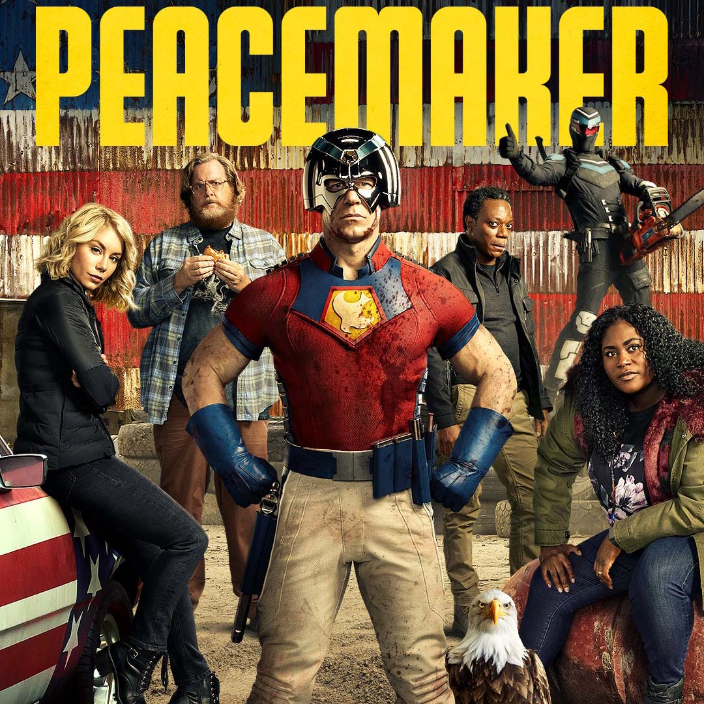
Peacemaker
(2022/Ongoing TV Show), Dir. James Gunn
&
Monster Train 2
(2025 Video Game), Shiny Shoe
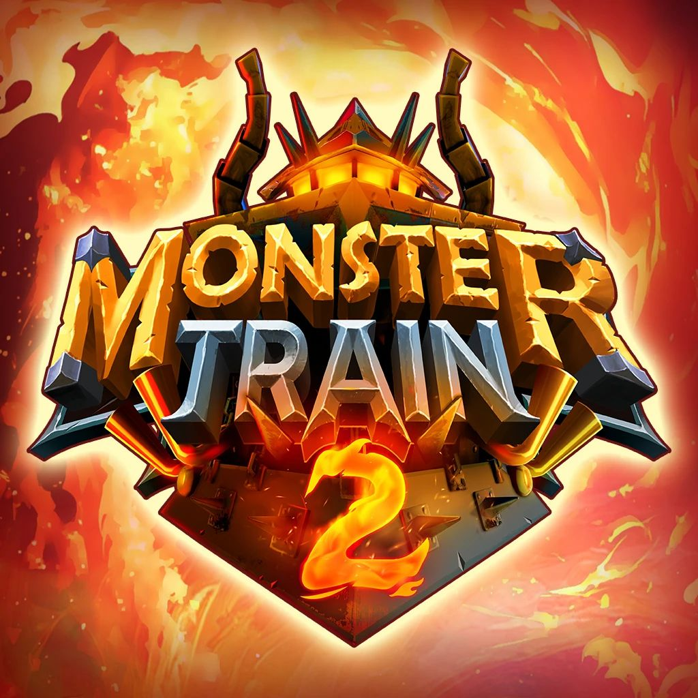
Feels like it's been ages but it's only been a month, huh? That's weird. Anyways, here's what I've been doing lately.
I've picked up the show, Peacemaker! It was an easier sell for me to watch it now rather than when it came out since Superman was pretty good, and because I knew it was getting a second season. I didn't go in expecting to like it or get very attatched to it's cast, and I felt this way through the beginnings of the first episode, but it really won me over as it went further. I've been vestigially attatched to the marvel train for a while now, and I'm feeling like maybe now is the time to let go and shack up with the DCU instead.
Monster Train 2, while not related to peacemaker in any way, is still a very good game. Granted, I'm not very good at it, but it's great nonetheless. I will be sinking many hours into this as time goes on, I can tell (And they're gonna update it!).
September 09th, 2025
A little update from the future: Now that the ending of Peacemaker has happened, I feel a little more lukewarm on the show as a whole, seeing it didn't quite stick it's second season's landing. (and my prediction re: Monster Train 2 was correct; In the almost two months between the last update and now, my hours of playtime have rocketed up to 75.)
October 28th, 2025
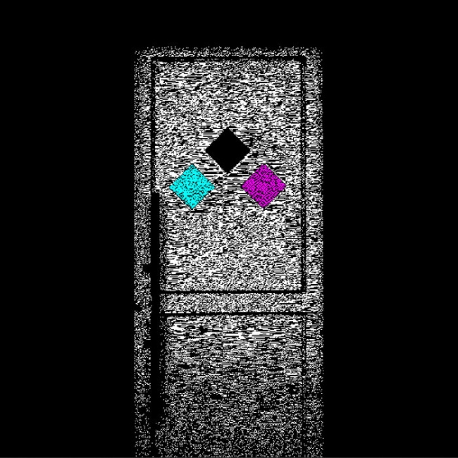
corru.observer
(2022/Ongoing Video Game), corru.works & co.
It's hard to describe my experience playing this game. Hell, it's hard to describe this game at all. It's played for free in a browser, but with a full & grand episodic story. The concept is equal parts esoteric and completely genius, I cannot begin to imagine the amount of thought, worldbuidling, and construction that went into planning this universe, let alone coding it in HTML, CSS, and Jscript (!!!). A significant portion of the dialouge flew straight over my head and I still ended up feeling for the characters by the end. Or, what is currently the end, because the game is Still Not Done! (Plus banger soundtrack, Timestopper Tactics awesome)

August 17th, 2025
did u leave ur brain at home
(2025 Song), Chipzel
&
did u leave ur brain at home
(2025 Song), Chipzel
did you leave your brain at home??? is this how you normally behave????
August 6th, 2025
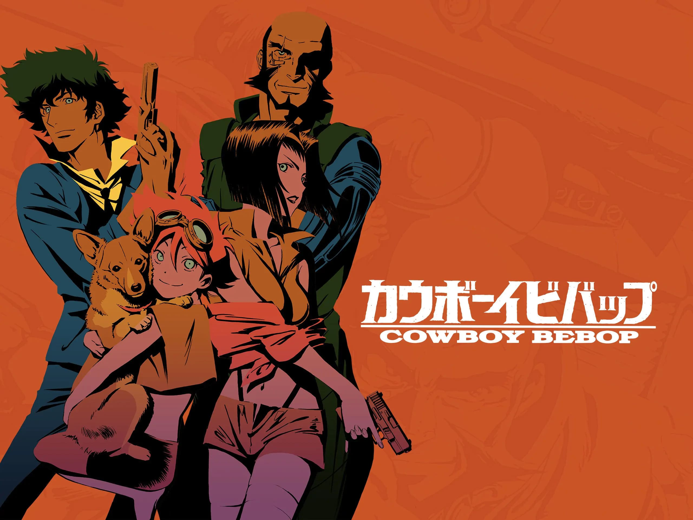
Cowboy Beebop
(1997 Anime), Dir. Shinichirō Watanabe
I've been entirely missing out on anime my whole life! My only exposures thus far had been the Ace Attorney anime (which I don't really count) and Stein's Gate (which I watched so long ago that I also hesitate to count), so I enjoyed digging into what I understand to be 'one of the classics'. The way the whole crew is characterised is wonderful and they have a relationship that feels like you could watch for hours and not get bored. My favorite character ended up being Ed, because she is a wild force of nature. And goggles, can't forget the goggles. Faye comes it second, because I always enjoyed her getting bored and / or yelling at people.
(Favorite episodes: "Bohemian Rhapsody", "Mushroom Samba", "Speak Like A Child", honestly all of the back half of the show)
July 21th, 2025
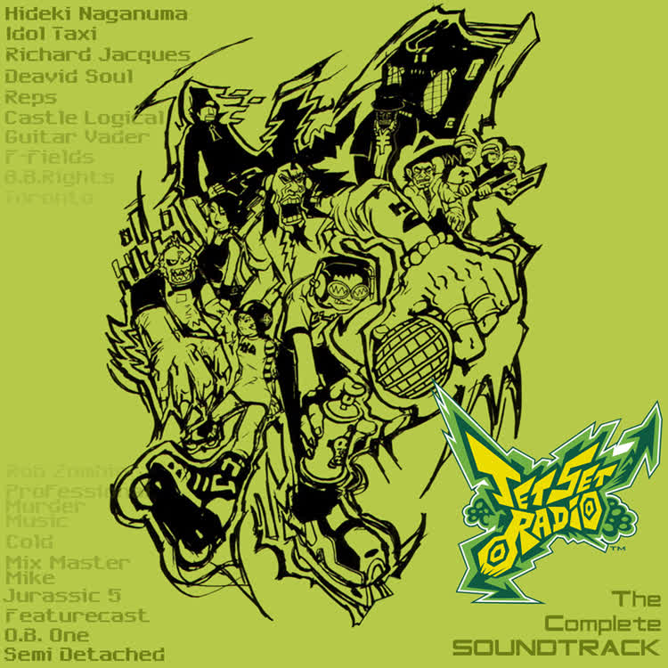
Jet Set Radio
(2000 Video Game), SEGA
Up until now, I have been enjoying JSR as, essentially, an album and a general asthetic. I'd heard conficting opinions about how the game plays, and I wanted to give it a shot for myself. I'm happy to report that everything about this game is great- except for the gameplay. It might just be that I played Bomb Rush first so my standards are pretty high for snappy movement in one of these games, and JSR was probably great at the time, but man it didn't feel good to control. You slip around like a boulder on ice skates. and once you figure out how to guide your momentum properly you still have to deal with the constant police onslaught (those helicopters were evil) and the.. level timer? Who thought of that? Holdover from the arcade days of old?
Thankfully, everything else is stellar enough that I didn't mind the rest too much. Character and environment design is top notch, and the music is even topper notch as expected.
July 20th, 2025
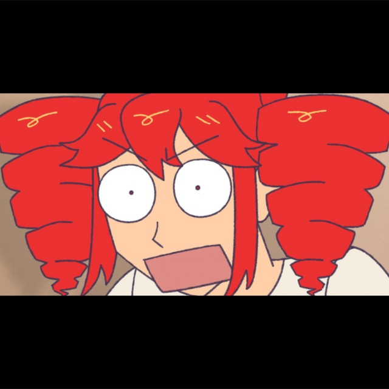
BIRDBRAIN
(2025 Song), Jamie Paige ft. OK Glass
&
Constant Companions
(2025 Album), Jamie Paige
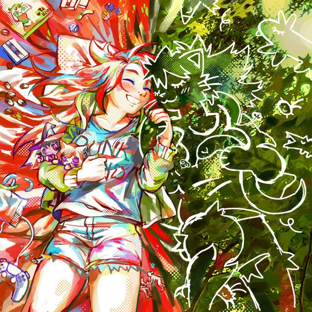
I heard BIRDBRAIN (and by extension, any of Jamie's work) first because of a post by Punkitt on Tumblr talking about how much detail was put into giving the song 'ameturish' qualities (i.e. false starts, vocal strain, etx). This is extremely true, it adds so much emotion that you practically forget that it's sung by a vocaloid. I got hooked on the song, so naturally I went to listen to more of her work, and also fell in love with ROT FOR CLOUT and I Wish That I Could Fall. It's amazing stuff. Also I later learned that there's a deluxe version of Constant Companions coming out that has BIRDBRAIN on it! Awesome!. (BIRDBRAIN is so cool, the false starts get me every time...)
June 30th, 2025
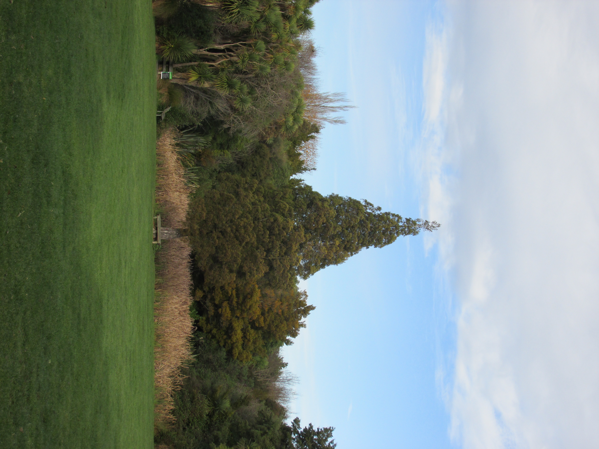
A Morning Walk
After an interesting night
&
Song Machine, Season One: Strange Timez
(2020 Album), Gorillaz
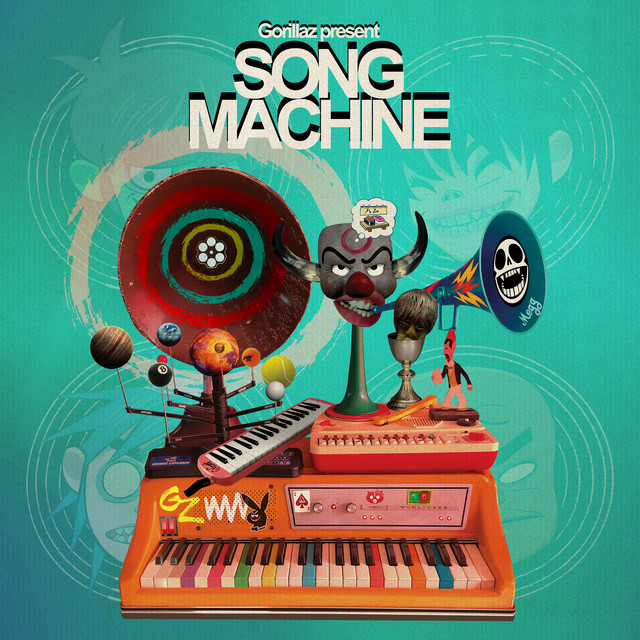

There's never not enough time for a melancholic walk around your old home town, seeing places you used to vist that have since changed dramatically, perhaps paralelling some kind of loss of childhood memory or innocence. Or maybe it's just that they didn't happen to take particular care of this park specifically, and the reason it was all muddy and wet was because you visited in the winter. Who could say?
Also Song machine! Didn't have to second thoughts this one, liking it from the gecko. Fav track: Strange Timez, Chalk Tablet Towers
May 10th, 2025
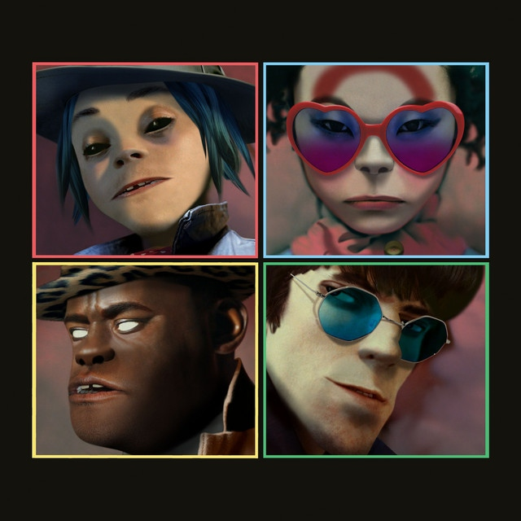
Humanz
(2017 Album), Gorillaz
&
The Now Now
(2018 Album), Gorillaz
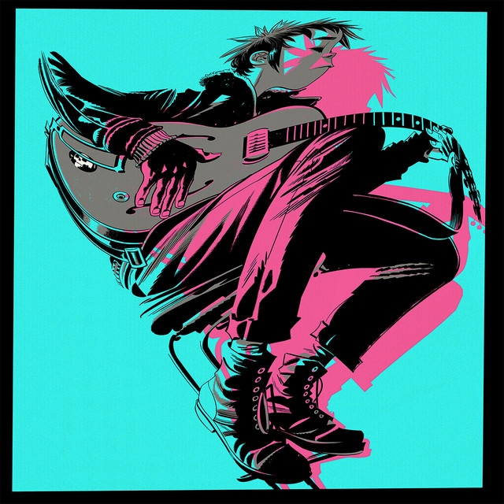
A pattern has been forming as I listen to the rest of these albums. The first time I listen, I maybe don't like it. maybe I'm not paying too much attention (the first time I listened to The Now Now was on the way down Mt Richardson, so maybe that didn't help), or maybe I just don't appreciate it enough. But once I come back, it starts hitting. These two albuls have absolutely hit for me. Starting to think I'm more of a modern gorillaz fan than an old gorillaz fan. (fav tracks: Andromeda, Souk Eye, Hollywood, Strobelite)
Like, a couple weeks ago or something
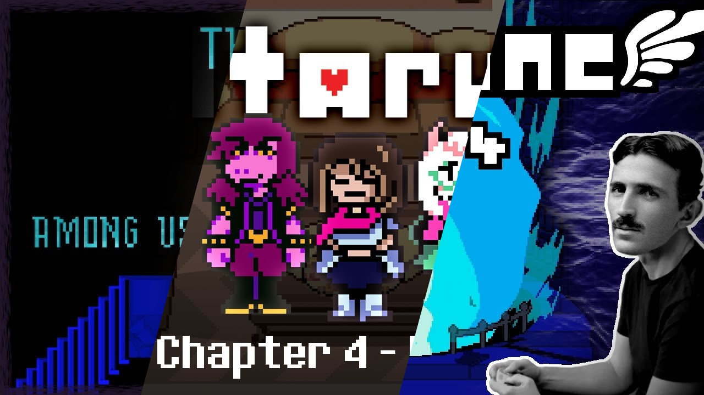
Watching DELTARUNE Playthroughs
From Andrew Cunningham, Snapcube, & Barry
&
The Binding Of Isaac: Repentance
(2014 Video Game), Nicalis
This has pretty much been my life for the past week. I mean, part of the fun of a new game is getting to watch lots of different people play it, and see how they react! One of the better things you can do on the internet.
As far as Isaac goes, I've sunk a lot of hours into it because it's a nice 'brain off' kind of game. A big long checklist of things to do, no order to do them in. I've already completed a save on switch ages ago, and was going to try completing another file, when I realised I wasn't having fun at all. So I decided to just try and get a win streak with characters I actually enjoy playing instead.
In truth, I'm writing about it here so that I maybe stop doing it, because, as I said, it's all I've been doing for the past week. And there's lots of other games I want to play.
June 15th, 2025
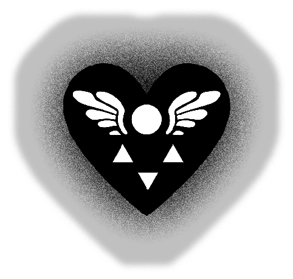
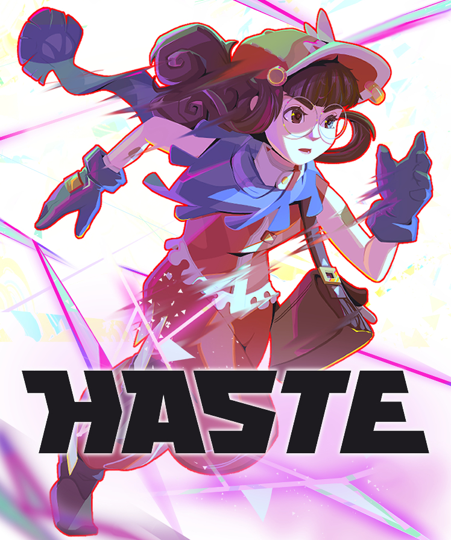
Haste: Broken Worlds
(2025 Video Game), Landfall Games
&
The Elder Scrolls V: Skyrim
(2011, 2013, 2016, 2017, 2018, 2018, 2021 Video Game), Bethesda Game Studios
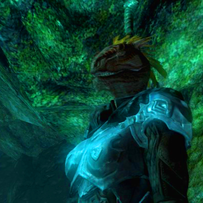
A couple of games I've been playing recently! I'm super happy I picked up Haste, sort of on a whim. I had seen some good looking footage, then I found out it was developed by Landfall, which was the final sell. What I got was one of the slickest movement systems I've ever had the pleasure to use. Real dopamine in a bottle stuff. A great soundtrack too, brings me back to the days of Clustertruck.
Also experienced the semi-regular brain parasite that urges you to start another Skyrim playthrough recently, and I tried something I hadn't before. I'm usually all about magic with the occasional one handed sword, and wouldn't be caught dead in light armor, but I forwent those this time around and had a lot of fun. There really is a simple pleasure to be derrived from playing as a buff lizard woman who hits things with a big hammer.
June 1st, 2025
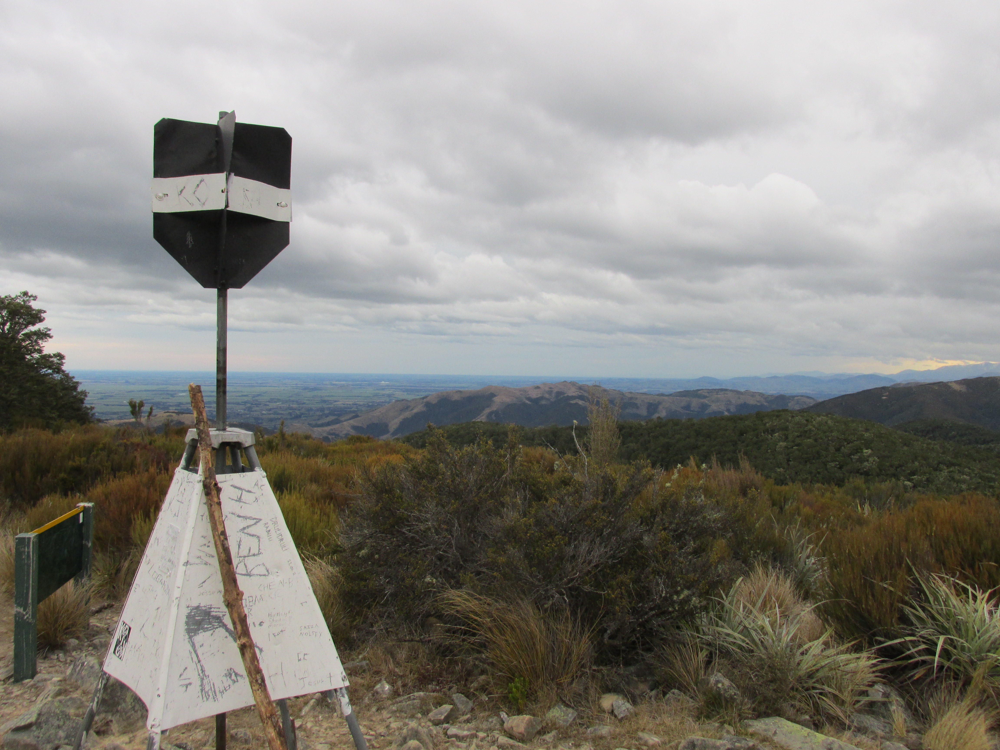
The Mt Richardson Track
(Summit Trail), you're never gonna guess where
The track sign said three hours. I (naive) assumed that this meant three hours return. I was wrong. This track was very muddy, and very uphill. Also when I got home, my cat congradulated me by bringing a live rat into my bedroom. I write this a day later, and my legs are also congradulating me by ceasing to function.
(note from the making of this website approximatley one week later: my legs did not regain full functionality for serveral days after.)
(second note: I never found the live rat)
May 25th, 2025
A Night on the Town with Drunk Friends
(Experience), Streets, bars, etc of Christchurch
When I'm around drunk friends, sometimes a sweet spot is hit where their drunken stupor matches my natural sober silliness. Do you have to brave some earsplittingly loud bars for it? Yes. Do you occasionally need to chuck ice at people for using words they shouldnt? If the need arises. But, in this specific instance at least, I deemed it worth it.
May 17th, 2025
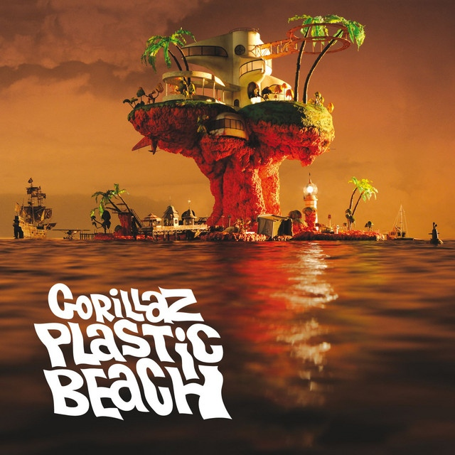
Plastic Beach
(2010 Album), Gorillaz
&
Rose Lemonade
(Soft Drink), Fentimans
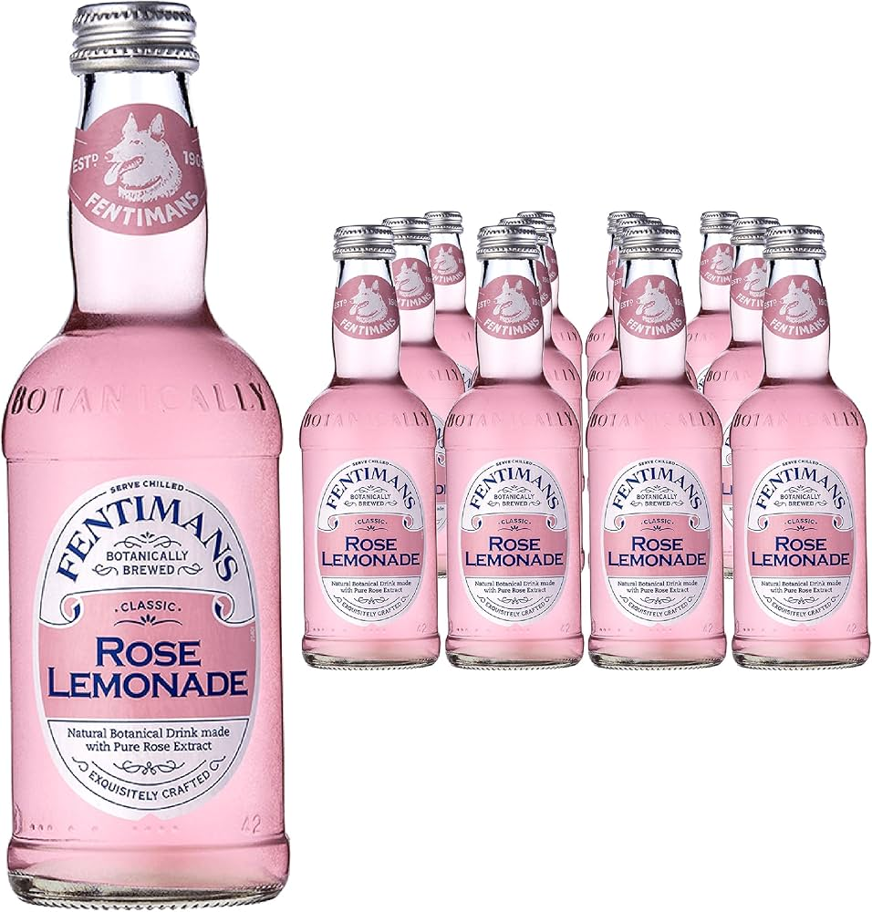
Following on from my personal 'rediscovering' of Gorillaz earlier this year (see Old Site/2025 for more on this), I'd listened to this album a coulple times through. However, it wasnt until I watched a good video last night that the band kind of opened up to me. There was a whole extra level of complexity here that I never knew! There was lore! Noodle dies in an island crash / helicopter attack and gets brought back as a cyborg! So today I listened to the album while bussing around town, and really heard it in a new light. I'm not quite sure yet, but I think Stylo is my favorite track.
(the only reason the lemonade is here is because the only place I've ever been able to get it is a supermarket next to the bus interchange, so it's linked in my mind to taking the bus)
May 12th, 2025
Sinners
(2025 Film), Dir. Ryan Coogler
&
Burger Wisconsin
(New Zealand Burger Franchise), Papanui Branch
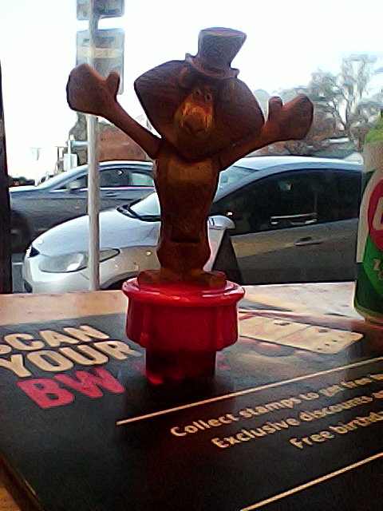
I cannot reccommend anyone go to burger wisconson. the atmosphere in there was weirdly dense, kind of foggy. Soggy, like the chips were. also in the magazine baskst i ate next to, there was an extremely aged Alex the Lion mcdonalds toy that had to be at least a decade old. scary stuff.
Conversely, i would reccomend that everyone watch Sinners [2025]. i didnt know much about the movie going in. I hadnt seen any trailers, so my knowledge was limited to the facts that it had a mostly black cast (at least 2 micheal B jordans), something about vampires, and that it was probably a good move (a rarity in the 2025 cinema). (spoilers) the opening mini "jumpscares" really primed me to think id accidentally stumbled into a horror movie, which kept me thoroughly on edge throught until the start of the final act. i also totally thought sammy was a vampire at the beginning, so I was going through the whole thing like "aw man, this is such a cool guy, shame hes gonna die at the end". great movie overall.
May 10th, 2025